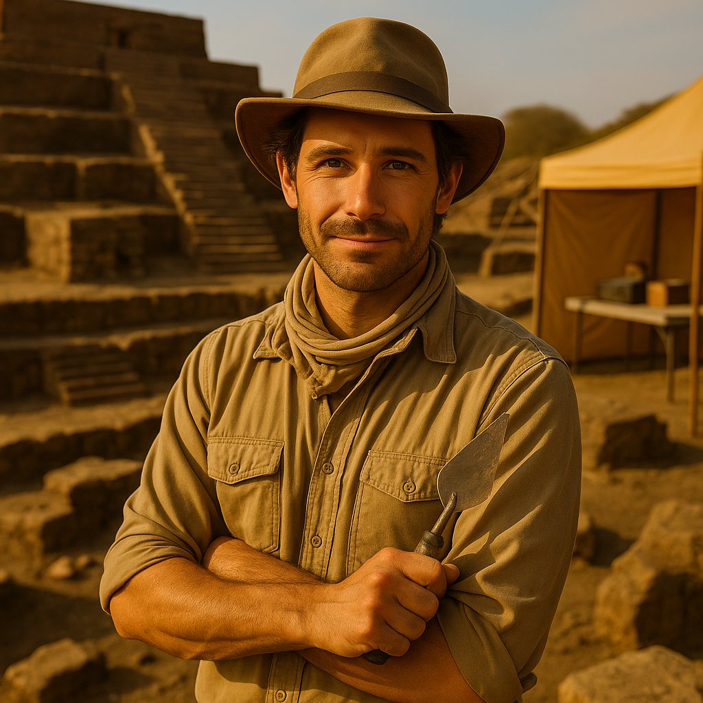

Dr. Isla Raman
Subject Matter Expertise: Archaeologist — Digital Stratigrapher
Professional Bio
Dr. Raman earned her PhD focusing on ritual highland sites. She combines careful excavation with photogrammetry, LIDAR, and ceramic analysis to model layers without disturbing fragile contexts. Her open data reports, reproducible field logs, and clear diagrams make results easy to audit.
Museum Role
Leads the “Echoes in Stone” gallery and designs the interactive excavation map that visitors can explore.
Special Considerations
- Multiple fieldwork fellowships; open-access site reports.
- Fluent in English/Hindi; GIS and R catalog analytics.
- Advocates transparent provenance and community review.